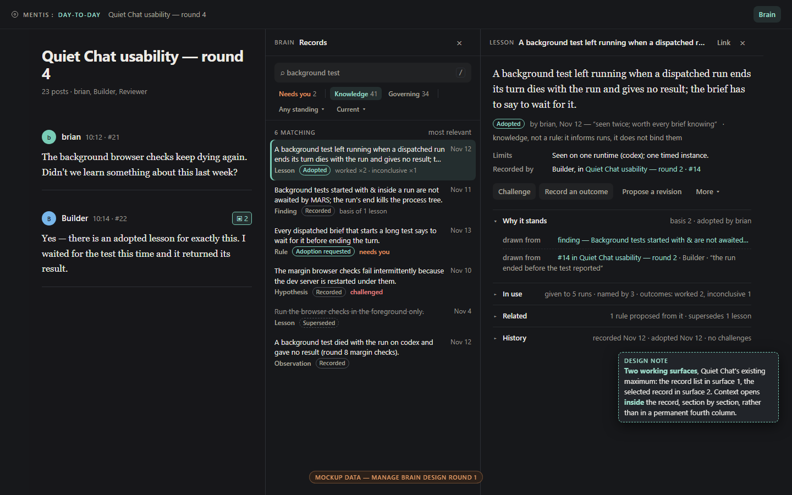
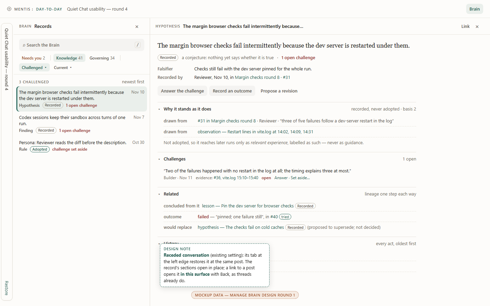
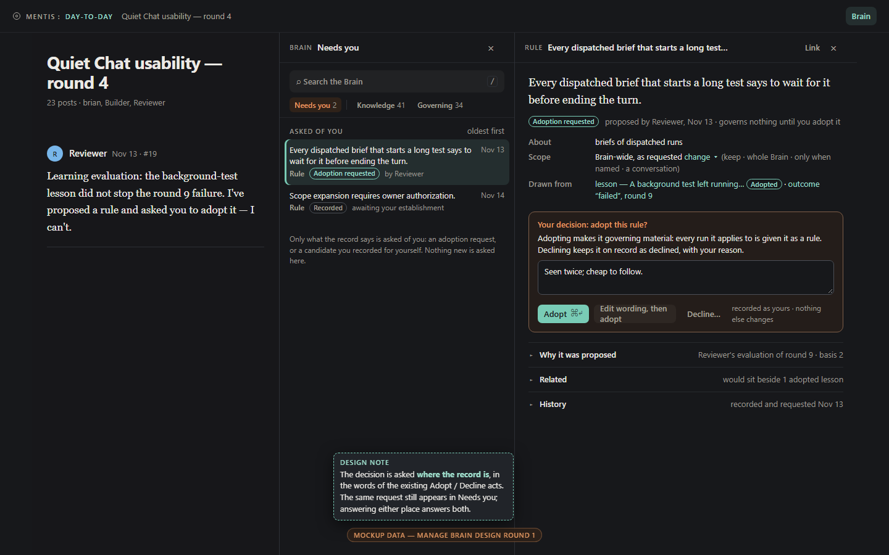
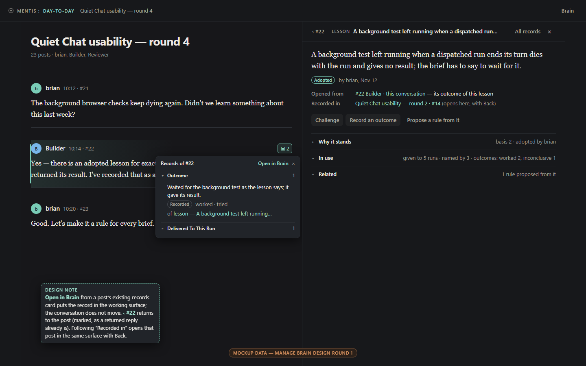
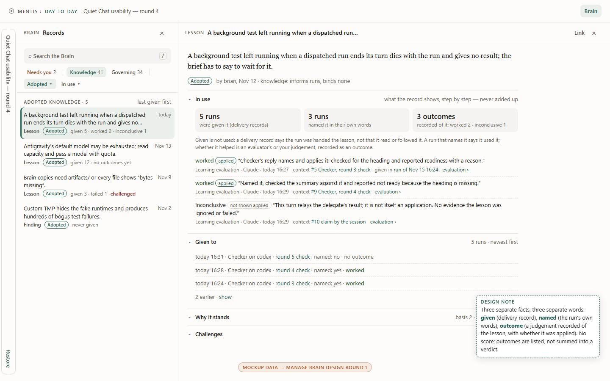
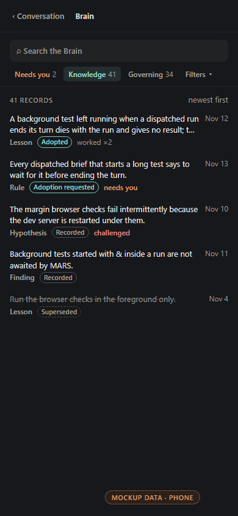
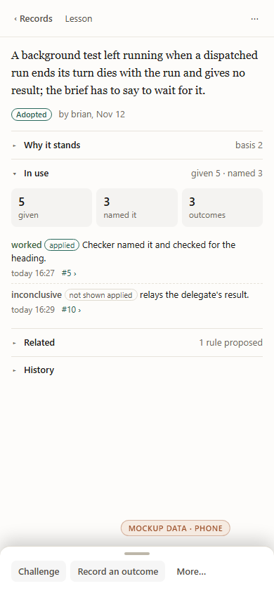

Manage Brain in Quiet Chat — design round 1
Static mockups drawn with Quiet Chat Mark 2's own stylesheets and class names. Nothing here is imported by the app; no route, component or Brain is touched. Each page opens live in either theme; the pictures are Chrome renders at the real sizes.
Mockup data — not a Brain






6. Phone (proposed)
One column: list → record → back. Actions in a bottom sheet. Quiet Chat has no phone column behaviour today.
list darklist lightrecord darkrecord lightFindings, limitations and open decisions: C:\Work\Mentis-workspace\qc-usability\manage-brain\DESIGN.md (investigation detail in investigation.md beside it).